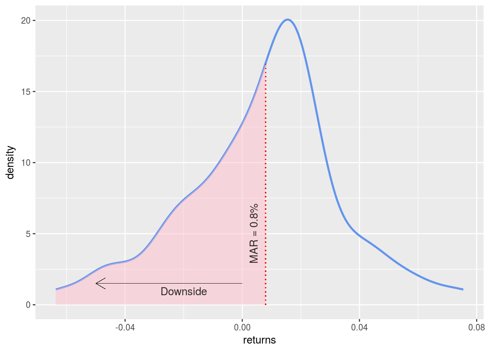

Chapter 4 Component Contribution to Volatility
Let’s break total portfolio volatility into its constituent parts and investigate how each asset contributes to the volatility. Why might we want to do that?
For our own risk management purposes, we might want to ensure that our risk hasn’t got too concentrated in one asset. Not only might this lead a less diversified portfolio than we thought we had, but it also might indicate that our initial assumptions about a particular asset were wrong, or at least, they have become less right as the asset has changed over time.
Similarly, if this portfolio is governed by a mandate from, say, an institutional client, that client might have a preference or even a rule that no asset or sector can rise above a certain threshold risk contribution. That institutional client might require a report like this from each of their outsourced managers, so they can sum the constituents.
As in the previous section on volatility, we need to build the covariance matrix and calculate portfolio standard deviation.
covariance_matrix <- cov(asset_returns_xts)
sd_portfolio <- sqrt(t(w) %*% covariance_matrix %*% w)Now let’s start to look at the individual components.
The percentage contribution of asset i is defined as: (marginal contribution of asset i * weight of asset i) / portfolio standard deviation
Let’s find the marginal contribution first by taking the cross product of the weights vector and the covariance matrix, divided by the portfolio standard deviation.
marginal_contribution <- w %*% covariance_matrix / sd_portfolio[1, 1]
marginal_contribution## SPY EFA IJS EEM AGG
## [1,] 0.02465 0.02939 0.03005 0.03523 0.0009151Now multiply the marginal contribution of each asset by the weights vector to get total contribution.
component_contribution <- marginal_contribution * w
component_contribution## SPY EFA IJS EEM AGG
## [1,] 0.006162 0.007347 0.006011 0.007046 9.151e-05We can then sum the asset contributions and make sure it’s equal to total portfolio standard deviation.
components_summed <- rowSums(component_contribution)
components_summed## [1] 0.02666sd_portfolio## [,1]
## [1,] 0.02666The summed components are equal to the total - all looks good.
To get to percentage contribution of each asset, we divide each asset’s contribution by total portfolio standard deviation.
component_percentages <- component_contribution / sd_portfolio[1, 1]
component_percentages## SPY EFA IJS EEM AGG
## [1,] 0.2312 0.2756 0.2255 0.2643 0.003433Let’s port this to a tibble for ease of presentation, and we’ll append by_hand to the object because we did the calculations step-by-step.
percentage_tibble_by_hand <-
tibble(symbols, w, as.vector(component_percentages)) %>%
rename(asset = symbols,
'portfolio weight' = w,
'risk contribution' = `as.vector(component_percentages)`) %>%
mutate(`risk contribution` = round(`risk contribution`, 4) * 100)
percentage_tibble_by_hand## # A tibble: 5 x 3
## asset `portfolio weight` `risk contribution`
## <chr> <dbl> <dbl>
## 1 SPY 0.250 23.1
## 2 EFA 0.250 27.6
## 3 IJS 0.200 22.6
## 4 EEM 0.200 26.4
## 5 AGG 0.100 0.340Does anything strike us as out of whack here? Is AGG acting as the volatility dampener we had hoped? It sure looks like it - AGG is contributing less than 1% to the overall volatility.
As you might have guessed, we used by_hand in the object name because we could have used a pre-built R function to do all this work.
The StdDev() function from PerformanceAnalytics will run this same component calculation if we pass in an asset returns object, weights vector and then set portfolio_method = "component" (recall that if we set portfolio_method = "single", the function will return the total portfolio standard deviation, as we saw in a previous section).
Let’s confirm that the pre-built function returns the same results as our by-hand.
portfolio_vol_comp_contr_total_builtin <- StdDev(asset_returns_xts, weights = w,
portfolio_method = "component")## Warning in (0.5 * as.vector(dpm2))/sqrt(pm2): Recycling array of length 1 in vector-array arithmetic is deprecated.
## Use c() or as.vector() instead.## Warning in contrib/sqrt(pm2): Recycling array of length 1 in vector-array arithmetic is deprecated.
## Use c() or as.vector() instead.portfolio_vol_comp_contr_total_builtin$contribution## SPY EFA IJS EEM AGG
## 6.162e-03 7.347e-03 6.011e-03 7.046e-03 9.151e-05That function returns a list and one of the elements is $pct_contrib_StdDev, which is the percentage contribution of each asset. Let’s move it to a tibble for ease of presentation.
# Port to a tibble.
percentages_tibble_pre_built <-
portfolio_vol_comp_contr_total_builtin$pct_contrib_StdDev %>%
tk_tbl(preserve_index = FALSE) %>%
mutate(asset = symbols) %>%
rename('risk contribution' = data) %>%
mutate(`risk contribution` = round(`risk contribution`, 4) * 100,
weights = w *100 ) %>%
select(asset, everything())Has our work checked out? Is percentages_tibble_pre_built showing the same result as component_percentages_tibble_by_hand?
Compare the two objects
percentages_tibble_pre_built## # A tibble: 5 x 3
## asset `risk contribution` weights
## <chr> <dbl> <dbl>
## 1 SPY 23.1 25.0
## 2 EFA 27.6 25.0
## 3 IJS 22.6 20.0
## 4 EEM 26.4 20.0
## 5 AGG 0.340 10.0percentage_tibble_by_hand## # A tibble: 5 x 3
## asset `portfolio weight` `risk contribution`
## <chr> <dbl> <dbl>
## 1 SPY 0.250 23.1
## 2 EFA 0.250 27.6
## 3 IJS 0.200 22.6
## 4 EEM 0.200 26.4
## 5 AGG 0.100 0.340Huzzah - our findings seem to be consistent! Let’s do some visualizing.
Visualizing Component Contribution
Let’s head to ggplot for some visualizing. We have not yet built a bar chart and now seems like a good time to start. We take our percentages_tibble_pre_built and want to put the risk contribution of each asset on the y-axis. That means a call to ggplot(aes(x = asset, y = risk_contribution)), after which we add the bar layer with geom_col(fill = 'cornflowerblue', colour = 'pink', width = .6).
percentages_tibble_pre_built %>%
mutate(risk_contribution = `risk contribution`/100) %>%
ggplot(aes(x = asset, y = risk_contribution)) +
geom_col(fill = 'cornflowerblue', colour = 'pink', width = .6) +
scale_y_continuous(labels = scales::percent, breaks = pretty_breaks(n = 20)) +
ggtitle("Percent Contribution to Volatility") +
theme(plot.title = element_text(hjust = 0.5)) +
xlab("Asset") +
ylab("Percent Contribution to Risk")
How about a chart that compares weights to risk contribution. First we’ll need to gather our tibble to long format by using gather(type, percent, -asset), then call ggplot(aes(x = asset, y = percent, fill = type)) and make sure the two columns are not right on top of each other with geom_col(position='dodge').
percentages_tibble_pre_built %>%
gather(type, percent, -asset) %>%
group_by(type) %>%
mutate(percent = percent/100) %>%
ggplot(aes(x = asset, y = percent, fill = type)) +
geom_col(position='dodge') +
scale_y_continuous(labels = percent) +
ggtitle("Percent Contribution to Volatility") +
theme(plot.title = element_text(hjust = 0.5))
It looks like AGG, a bond fund, has done a good job as a volatility dampener. It has a 10% allocation but contributes almost zero to volatility.